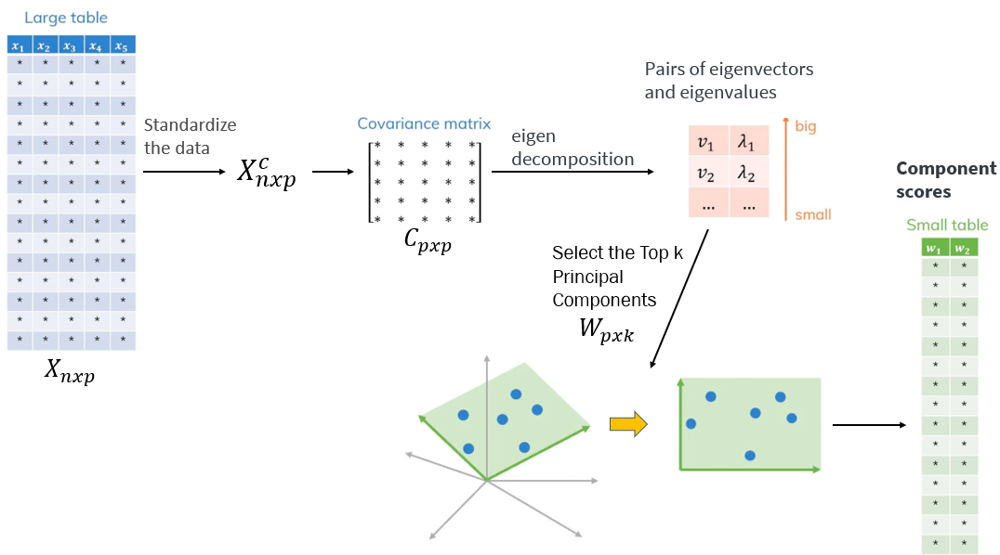
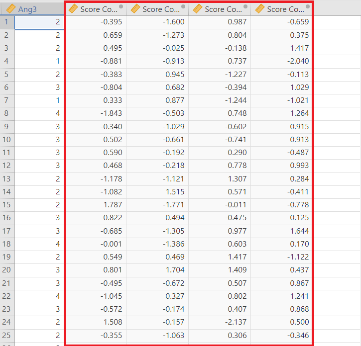

7 Principal Components Analysis
When we have finished this chapter, we should be able to:
7.1 Introduction
Suppose that we have \(n\) observations with measurements on a set of \(p\) observed variables (features), \(X_1,X_2, . . . ,X_p\). This means that each of the \(n\) observations lives in p-dimensional space, but not all of these dimensions are equally interesting. Principal Component Analysis (PCA) is a statistical technique that seeks a small number of dimensions, called principal components, that are as interesting as possible, where the concept of interesting is measured by the amount that the observations vary along each dimension.
Therefore, PCA is commonly used to reduce the dimensionality of a dataset while preserving as much of the total variance as possible. In other words, it transforms a large set of correlated variables into a smaller set of uncorrelated representative variables (principal components), which collectively explain most of the variability in the original data.
It is important to note that there are \(p\) possible principal components representing the full-dimensional space of the data. The first principal component of a set of observed variables \(X_1, X_2, . . . ,X_p\) is the normalized linear combination of the \(p\) observed variables:
\[PC1: Z_1 = \phi_{11} X_1 + \phi_{21} X_2 + ...+ \phi_{p1} X_p \] that has the largest variance. By normalized, we mean that \(\sum_{j=1}^p \phi_{j1}^2 = 1\). We refer to the elements \(\phi_{11}, \phi_{21},..., \phi_{p1}\) as the loadings of the first principal component.
To obtain the loadings of the first principal component (PC1), we solve an optimization problem that maximizes the variance of the data projected onto a linear combination of the original variables. This can be solved via an eigen decomposition, a standard technique in linear algebra (algebra of matrices).
After the first principal component \(Z_1\) of the observed variables has been determined, we can find the second principal component \(Z_2\).
\[PC2: Z_2 = \phi_{12} X_1 + \phi_{22} X_2 + ...+ \phi_{p2} X_p \]
The second principal component (PC2) explaines the next highest amount of variance. The elements \(\phi_{12}, \phi_{22},..., \phi_{p2}\) are referred to as the loadings of the second principal component. The same procedure can be applied to obtain the third principal component (PC3), the fourth component (PC4) and so on for subsequent components.
While PCA computes all \(p\) principal components, the goal is to reduce the dimensionality by keeping only the most important components. We might choose to keep just the top k components that explain a large portion of the total variance, and discard the remaining components.
EXAMPLE DATA
Our data analysis is based on the paper published by Lewis and Neville on the Gendered Racial Microaggressions Scale for Black Women (Lewis and Neville 2015). The article presents two separate studies that contributed to the development, refinement, and psychometric evaluation of two parallel versions of the scale: one measuring stress appraisal and the other measuring frequency. For the purposes of our analysis, we focus on the final construction of the stress appraisal version. Items were rated on a 6-point Likert scale ranging from 0 (not at all stressful) to 5 (extremely stressful).
Below is an outline of the 25 items included in the article by Lewis and Neville.
- Unattractive because of size of butt (Obj1)
- Negative comments about size of facial features (Obj2)
- Imitated the way they think Black women speak (Obj3)
- Someone made me feel unattractive (Obj4)
- Negative comment about skin tone (Obj5)
- Someone assumed I speak a certain way (Obj6)
- Objectified me based on physical features(Obj7)
- Someone assumed I have a certain body type (Obj8)
- Made a sexually inappropriate comment (Obj9)
- Negative comments about my hair when natural (Obj10)
- I have felt unheard (Marg1)
- My comments have been ignored (Marg2)
- Someone challenged my authority (Marg3)
- I have been disrespected in workplace (Marg4)
- Someone has tried to “put me in my place” (Marg5)
- Felt excluded from networking opportunities (Marg6)
- Assumed I did not have much to contribute to the conversation (Marg7)
- Someone assumed I was sassy and straightforward (Str1)
- I have been told that I am too independent (Str2)
- Someone made me feel exotic as a Black woman (Str3)
- I have been told that I am too assertive (Str4)
- Assumed to be a strong Black woman (Str5)
- Someone has told me to calm down (Ang1)
- Perceived to be “angry Black woman” (Ang2)
- Someone accused me of being angry when speaking calm (Ang3)
Our objective is to to reduce the set of 25 correlated items to a smaller set of uncorrelated variables, known as principal components, that capture the most significant variation in the original data. Ideally, these resulting components (or dimensions) should represent meaningful underlying concepts.
7.2 The technical part of PCA

Figure 7.2 illustrates the workflow of principal component analysis (PCA), as a method to reduce the number of dimensions of the data. It starts with a large table of data (\(X_{n \times p}\)), standardizes it (\(X^c_{n \times p}\)), and calculates the covariance matrix (\(C_{p \times p}\)) between observed variables (features). Then, it finds the principal directions (eigenvectors) and their importance (eigenvalues). By selecting the most important directions (the top k) using some criterion (e.g., eigenvalues greater than 1, cumulative variance), the original data is projected onto a lower-dimensional space applying the projection matrix \(W_{p \times k}\), resulting in a smaller table that still captures most of the data’s variability. The scatter plots visually show this reduction from a higher to a lower dimension.
- R-matrix
First, we calculate the R-matrix, which is a correlation matrix—a table of correlation coefficients between variables.
Obj1 Obj2 Obj3 Obj4 Obj5 Obj6 Obj7 Obj8 Obj9 Obj10 Marg1 Marg2 Marg3
Obj1 1.00 0.35 0.25 0.27 0.28 0.25 0.28 0.35 0.15 0.24 0.19 0.25 0.17
Obj2 0.35 1.00 0.31 0.25 0.27 0.23 0.31 0.28 0.26 0.24 0.22 0.21 0.25
Obj3 0.25 0.31 1.00 0.24 0.28 0.28 0.20 0.25 0.21 0.22 0.17 0.23 0.17
Obj4 0.27 0.25 0.24 1.00 0.39 0.23 0.28 0.30 0.26 0.28 0.22 0.18 0.14
Obj5 0.28 0.27 0.28 0.39 1.00 0.15 0.18 0.29 0.25 0.20 0.17 0.20 0.23
Obj6 0.25 0.23 0.28 0.23 0.15 1.00 0.20 0.14 0.21 0.12 0.10 0.14 0.05
Obj7 0.28 0.31 0.20 0.28 0.18 0.20 1.00 0.31 0.19 0.28 0.30 0.21 0.20
Obj8 0.35 0.28 0.25 0.30 0.29 0.14 0.31 1.00 0.19 0.23 0.27 0.14 0.14
Obj9 0.15 0.26 0.21 0.26 0.25 0.21 0.19 0.19 1.00 0.20 0.10 0.12 0.21
Obj10 0.24 0.24 0.22 0.28 0.20 0.12 0.28 0.23 0.20 1.00 0.09 0.12 0.17
Marg1 0.19 0.22 0.17 0.22 0.17 0.10 0.30 0.27 0.10 0.09 1.00 0.43 0.41
Marg2 0.25 0.21 0.23 0.18 0.20 0.14 0.21 0.14 0.12 0.12 0.43 1.00 0.35
Marg3 0.17 0.25 0.17 0.14 0.23 0.05 0.20 0.14 0.21 0.17 0.41 0.35 1.00
Marg4 0.19 0.18 0.24 0.26 0.20 0.10 0.25 0.24 0.07 0.12 0.38 0.23 0.32
Marg5 0.17 0.22 0.21 0.27 0.25 0.16 0.23 0.19 0.19 0.11 0.41 0.40 0.25
Marg6 0.18 0.27 0.16 0.23 0.22 0.26 0.28 0.26 0.15 0.26 0.35 0.27 0.25
Marg7 0.13 0.19 0.14 0.19 0.06 0.17 0.16 0.14 0.10 0.11 0.31 0.33 0.20
Str1 0.22 0.18 0.14 0.06 0.23 0.07 0.25 0.17 0.19 0.10 0.19 0.25 0.20
Str2 0.19 0.18 0.19 0.19 0.12 0.15 0.13 0.06 0.18 0.19 0.12 0.18 0.17
Str3 0.10 0.09 0.09 0.08 0.11 0.09 0.19 0.05 0.12 0.10 0.13 0.18 0.10
Str4 0.09 0.14 0.18 0.15 0.12 0.08 0.07 0.13 0.05 0.02 0.08 0.12 0.08
Str5 0.20 0.15 0.15 0.08 0.19 0.11 0.15 0.04 0.07 0.09 0.10 0.23 0.12
Ang1 0.06 0.07 0.07 0.09 0.12 0.04 0.15 0.07 0.17 0.06 0.16 0.23 0.18
Ang2 0.06 0.15 0.08 0.06 0.09 0.20 0.13 -0.03 0.00 0.14 0.17 0.19 0.19
Ang3 0.21 0.13 0.11 0.14 0.11 0.16 0.23 0.07 0.06 0.08 0.28 0.28 0.11
Marg4 Marg5 Marg6 Marg7 Str1 Str2 Str3 Str4 Str5 Ang1 Ang2 Ang3
Obj1 0.19 0.17 0.18 0.13 0.22 0.19 0.10 0.09 0.20 0.06 0.06 0.21
Obj2 0.18 0.22 0.27 0.19 0.18 0.18 0.09 0.14 0.15 0.07 0.15 0.13
Obj3 0.24 0.21 0.16 0.14 0.14 0.19 0.09 0.18 0.15 0.07 0.08 0.11
Obj4 0.26 0.27 0.23 0.19 0.06 0.19 0.08 0.15 0.08 0.09 0.06 0.14
Obj5 0.20 0.25 0.22 0.06 0.23 0.12 0.11 0.12 0.19 0.12 0.09 0.11
Obj6 0.10 0.16 0.26 0.17 0.07 0.15 0.09 0.08 0.11 0.04 0.20 0.16
Obj7 0.25 0.23 0.28 0.16 0.25 0.13 0.19 0.07 0.15 0.15 0.13 0.23
Obj8 0.24 0.19 0.26 0.14 0.17 0.06 0.05 0.13 0.04 0.07 -0.03 0.07
Obj9 0.07 0.19 0.15 0.10 0.19 0.18 0.12 0.05 0.07 0.17 0.00 0.06
Obj10 0.12 0.11 0.26 0.11 0.10 0.19 0.10 0.02 0.09 0.06 0.14 0.08
Marg1 0.38 0.41 0.35 0.31 0.19 0.12 0.13 0.08 0.10 0.16 0.17 0.28
Marg2 0.23 0.40 0.27 0.33 0.25 0.18 0.18 0.12 0.23 0.23 0.19 0.28
Marg3 0.32 0.25 0.25 0.20 0.20 0.17 0.10 0.08 0.12 0.18 0.19 0.11
Marg4 1.00 0.30 0.26 0.16 0.10 0.21 0.05 0.06 0.03 0.12 0.22 0.17
Marg5 0.30 1.00 0.29 0.28 0.16 0.13 0.16 0.14 0.18 0.12 0.14 0.21
Marg6 0.26 0.29 1.00 0.20 0.13 0.18 0.15 0.13 0.08 0.11 0.21 0.12
Marg7 0.16 0.28 0.20 1.00 0.14 0.05 0.04 0.02 0.12 0.17 0.13 0.09
Str1 0.10 0.16 0.13 0.14 1.00 0.21 0.30 0.23 0.23 0.18 0.05 0.10
Str2 0.21 0.13 0.18 0.05 0.21 1.00 0.20 0.20 0.12 0.16 0.12 0.16
Str3 0.05 0.16 0.15 0.04 0.30 0.20 1.00 0.27 0.18 0.20 0.07 0.15
Str4 0.06 0.14 0.13 0.02 0.23 0.20 0.27 1.00 0.12 0.15 0.03 0.02
Str5 0.03 0.18 0.08 0.12 0.23 0.12 0.18 0.12 1.00 0.22 0.15 0.11
Ang1 0.12 0.12 0.11 0.17 0.18 0.16 0.20 0.15 0.22 1.00 0.24 0.23
Ang2 0.22 0.14 0.21 0.13 0.05 0.12 0.07 0.03 0.15 0.24 1.00 0.25
Ang3 0.17 0.21 0.12 0.09 0.10 0.16 0.15 0.02 0.11 0.23 0.25 1.00Our objective is to turn the R-matrix (correlation matrix) into an output which represents the degree to which each observed variable contributes to a component.
Principal components are derived through an eigen-decomposition of the correlation matrix. This process involves re-expressing the matrix in terms of its eigenvectors and eigenvalues. The eigenvectors define the directions (or axes) of the new feature space, while the corresponding eigenvalues indicate the amount of variance explained by each component.
7.2.1 PC1
- Eigenvector and eigenvalue for PC1
The first eigenvector \(v_1=(\alpha_{11}, \alpha_{21}, ..., \alpha_{p1})\) is:
[1] 0.225 0.239 0.214 0.226 0.220 0.173 0.240 0.207 0.175 0.179 0.251 0.250
[13] 0.220 0.214 0.242 0.234 0.176 0.185 0.173 0.141 0.123 0.146 0.149 0.140
[25] 0.166Therefore, \(a_{11} = 0.225\), \(a_{21} = 0.239\), \(a_{31} = 0.214\), …, \(a_{25 \ 1} = 0.166\) etc.
The corresponding eigenvalue, \(\lambda_{1}\), is:
[1] 5.365
- Loadings of PC1
Now, we are ready to calculate the loadings \(\phi_{11}, \phi_{21},..., \phi_{p1}\) of the first principal component according to the formula:
\[\phi_{i1} = \alpha_{i1} \sqrt{\lambda_{1}}\]
where \(i= 1,...p\).
For example:
\(\phi_{11} = \alpha_{11} \sqrt{\lambda_{1}} = 0.225 \ \cdot \sqrt{5.365}= 0.225 \ \cdot 2.32 = 0.52\)
\(\phi_{21} = \alpha_{21} \sqrt{\lambda_{1}} = 0.239 \ \cdot \sqrt{5.365}= 0.239 \ \cdot 2.32 = 0.55\)
\(\phi_{31} = \alpha_{31} \sqrt{\lambda_{1}} = 0.214 \ \cdot \sqrt{5.365}= 0.214 \ \cdot 2.32 = 0.49\)
…
\(\phi_{25 \ 1} = \alpha_{25 \ 1} \sqrt{\lambda_{1}} = 0.166 \ \cdot \sqrt{5.365}= 0.166 \ \cdot 2.32 = 0.38\)
All 25 loadings for the first principal component (PC1) are shown below:
[1] 0.52 0.55 0.49 0.52 0.51 0.40 0.56 0.48 0.40 0.42 0.58 0.58 0.51 0.50 0.56
[16] 0.54 0.41 0.43 0.40 0.33 0.29 0.34 0.35 0.33 0.38
7.2.2 PC2
- Eigenvector and eigenvalue for PC2
The second eigenvector \(v_2=(\alpha_{12}, \alpha_{22}, ..., \alpha_{p2})\) is:
[1] -0.224 -0.212 -0.201 -0.265 -0.221 -0.156 -0.082 -0.308 -0.212 -0.245
[11] 0.240 0.287 0.173 0.079 0.143 -0.005 0.159 0.093 0.025 0.168
[21] 0.022 0.151 0.309 0.284 0.237Therefore, \(a_{12} = -0.224\), \(a_{22} = -0.212\), \(a_{32} = -0.201\),…, \(a_{25 \ 2} = 0.237\) etc.
The corresponding eigenvalue, \(\lambda_{2}\), is:
[1] 1.706
- Loadings of PC2
Now, we are ready to calculate the loadings \(\phi_{12}, \phi_{22},..., \phi_{p2}\) of the second principal component according to the formula:
\[\phi_{i2} = \alpha_{i2} \sqrt{\lambda_{2}}\]
where \(i= 1,...p\).
For example:
\(\phi_{12} = \alpha_{12} \sqrt{\lambda_{2}} = -0.224 \ \cdot \sqrt{1.706}= -0.224 \ \cdot 1.3 = -0.29\)
\(\phi_{22} = \alpha_{22} \sqrt{\lambda_{2}} = -0.212 \ \cdot \sqrt{1.706}= -0.212 \ \cdot 1.3 = -0.28\)
\(\phi_{32} = \alpha_{32} \sqrt{\lambda_{2}} = -0.201 \ \cdot \sqrt{1.706}= -0.201 \ \cdot 1.3 = -0.26\)
…
\(\phi_{25 \ 2} = \alpha_{25 \ 2} \sqrt{\lambda_{2}} = 0.237 \ \cdot \sqrt{1.706}= 0.237 \ \cdot 1.3 = 0.31\)
All 25 loadings for the second principal component (PC2) are shown below:
[1] -0.29 -0.28 -0.26 -0.35 -0.29 -0.20 -0.11 -0.40 -0.28 -0.32 0.31 0.38
[13] 0.23 0.10 0.19 -0.01 0.21 0.12 0.03 0.22 0.03 0.20 0.40 0.37
[25] 0.31The same procedure can be applied to calculate the loadings of the third principal component (PC3), the fourth component (PC4) and so on for subsequent components. Therefore, the loadings are scaled versions of eigenvectors that reflect both direction and strength of association.
(NOTE: The previously computed component loadings were obtained without applying any rotation method.)
7.3 Eigenvalues and variance
A fundamental aspect of principal component analysis (PCA) is understanding how eigenvalues relate to the variance in the dataset.
Each of the 25 eigenvectors has an associated eigenvalue, \(\lambda_1, \lambda_2, ... \lambda_p\), as shown below:
[1] 5.3654707 1.7059541 1.5384132 1.2206643 1.0777632 1.0395105 1.0223027
[8] 0.9764029 0.9456935 0.9039208 0.8420446 0.8298040 0.7462031 0.7344016
[15] 0.6934445 0.6803484 0.6360415 0.6105103 0.5829854 0.5460390 0.5059900
[22] 0.4808372 0.4546453 0.4498703 0.4107389The sum of the eigenvalues will equal the number of variables in the data set:
\[\lambda_1 + \lambda_2 + \lambda_3 + ...+ \lambda_p = 5.37 + 1.71 + 1.54 +...+ 0.41 = 25\]
To determine the proportion of variance explained by the first principal component (i.e., direction by that component), we use the following formula:
\[\frac{\lambda_1}{\lambda_1 + \lambda_2 + \lambda_3 + ...+ \lambda_p} = \frac{5.37}{25} = 0.215 \ or \ 21.5\%\]
Similarly, the explained variance by the second principal component is:
\[\frac{\lambda_2}{\lambda_1 + \lambda_2 + \lambda_3 + ...+ \lambda_p} = \frac{1.71}{25} = 0.068 \ or \ 6.8\%\]
Note that the first component captures the maximum variance, the second captures the next highest variance orthogonal to the first, and so on.
7.4 Steps in the process of PCA
Prepare the Data: (a) Standardize the items to have a mean of 0 and a standard deviation of 1. This ensures that variables with larger scales do not dominate the principal components. However, in practice, Likert scale data are typically not standardized, as the scale is generally considered consistent across items. (b) Address outliers in the data. Note that outliers in Likert data are often extreme values, such as respondents who consistently select the “0 = not at all stressful” or “5 = extremely stressful” option. (c) Additionally, it is important to reverse-score negatively worded items (if applicable) to ensure that all items are scaled in the same direction.
Evaluate Assumptions: Assess the suitability of the data for PCA using diagnostic tests such as the Kaiser-Meyer-Olkin (KMO) measure of sampling adequacy and Bartlett’s test of sphericity. These tests determine whether the correlation matrix is appropriate for component extraction.
Determine the Number of Components: Identify how many components to retain, guided by criteria such as eigenvalues greater than one (Kaiser Criterion), scree plot inspection, parallel analysis, interpretability of components, or a combination of these methods. The goal is to select the number of components that represent meaningful dimensions, effectively capturing the most important sources of variance in the data.
Extract the principal components: Once the number of components to retain is decided, select the eigenvectors that correspond to the most important directions (those with the largest eigenvalues). These eigenvectors represent the principal components (PCs) of interest, which are the new axes that capture the most variance in the data.
Rotate Components (optional): After extracting the components, consider applying an orthogonal rotation (e.g., varimax) to clarify the component structure. Keep in mind that rotation is optional in PCA and affects interpretability but not the total variance explained.
Compute the component scores: Once the component structure is finalized, compute the component scores for each observation. These scores represent the data projected onto the new principal component axes. Component scores can be used in further analyses, such as visualization (e.g., creating scatter plots of the first two components), clustering, or regression.
7.5 Example of GRMS Stress Appraisal
On the Jamovi top menu navigate to
flowchart LR A(Analyses) -.-> B(Factor) -.-> C(Principal Component Analysis)
as shown below (Figure 7.3).
The Principal Component Analysis box opens (Figure 7.3). From the left-hand pane drag all the variables into the Variables field on the right-hand side, as shown below (Figure 7.4):
All variables in the dataset are on the same scale (Likert scale).
7.5.1 Assumptions
From the Assumption Checks, tick both boxes: Bartlett’s test of sphericity and KMO measure of Sampling Adequacy.
- Bartlett’s test of sphericity
Bartlett’s test examines the null hypothesis that the correlation matrix is an identity matrix—meaning all the variables are uncorrelated (i.e., the off-diagonal elements are zero). A significant result (p < 0.05) indicates that the correlation matrix significantly differs from an identity matrix, suggesting that the variables share enough correlation to justify the use of principal component analysis (PCA).
Our Bartlett’s test is significant: \(\chi^2 = 1217\) (p<0.001). This means that our sample correlation matrix is statistically significantly different than an identity matrix and, therefore, supports a component analytic approach for investigating the data.
- Kaiser-Meyer-Olkin (MKO) index of Sampling Adequacy
The Kaiser-Meyer-Olkin index (KMO) is an index of sampling adequacy that varies between 0 and 1. Kaiser’s 1974 recommendations were:
- bare minimum of 0.5
- values between 0.5 and 0.7 as mediocre
- values between 0.7 and 0.8 as good
- values between 0.8 and 0.9 as great
- values above 0.9 are superb
If the KMO is below the recommendations, we should probably collect more data to see if it can achieve a satisfactory value.
The Kaiser–Meyer–Olkin (KMO) measure verified the sampling adequacy for the analysis KMO = 0.85, which is considered “great”. Additionally, all individual KMO values were above 0.74—well above the acceptable threshold of 0.50.
7.5.2 Specify the Number of Components
Since PCA produces as many components as there are original variables, we need criteria to decide how many of them capture meaningful structure in the data
Our decisions on how many components to keep can be guided by several methods:
Cumulative variance explained – Retain enough components to account for a desired proportion of total variance.
Parallel analysis – Compare the observed eigenvalues with those obtained from randomly generated data to determine which components are meaningful.
Kaiser’s criterion – Retain components with eigenvalues greater than 1.
Theoretical justification (“meaningfulness criterion”) – Retain components that align with prior knowledge, conceptual frameworks, or hypotheses relevant to the domain of study (fixed number).
Jamovi allows users to choose the number of components based on parallel analysis, eigenvalues, or by manually specifying a fixed number.

Additionally, a scree plot displays the eigenvalues associated with each principal component in descending order. It is used to visually identify the “elbow point”—the point at which the rate of decline in eigenvalues noticeably levels off. This point suggests the optimal number of components to retain, as additional components contribute relatively little to explaining variance.
In our example, parallel analysis suggests retaining 3 components (Figure 7.10), while Kaiser’s criterion indicates 7 components (Figure 7.11). We could also explore retaining 4, 5, or 6 components, as these values fall between the two suggested numbers.
For the purposes of this analysis, let’s retain the first four components.
7.5.3 Component Rotation
In PCA, components are by definition orthogonal and ordered by the amount of variance each explains. Although the unrotated solution already maximizes total variance, applying a rotation—while not mathematically required—can greatly enhance interpretability. Rotation redistributes variance across components (without changing the overall variance explained) to achieve a “simple structure,” in which each variable loads highly on one component and minimally on the others. This clarifies the grouping of variables and makes the underlying dimensions easier to understand.
Jamovi supports two options for rotation in PCA:
Orthogonal Rotation: Methods like Varimax keep the components uncorrelated (i.e., orthogonal). This preserves the core mathematical properties of PCA, ensuring that the components remain independent.
Oblique Rotation: Jamovi offers methods like Promax and Oblimin that allow components to be correlated, which are more commonly used in Exploratory Factor Analysis (EFA). While oblique rotation can improve interpretability when underlying constructs are expected to be correlated, it departs from the strict orthogonality assumption of PCA. As a result, the components are no longer independent, which can make PCA less appropriate in situations where correlated factors are theorized.
7.6 PCA with Varimax rotation
Select the Varimax rotation method (which is the default):

After rotation, there are four clear components/dimensions (NOTE: In the unrotated method, that is “Rotation None” in Jamovi, most variables loaded on the first component).
There is clear (or at least reasonable) component membership for each variable. By default, the table displays all component loadings greater than 0.30. When an observed variable loads on multiple components above this threshold, it is examined for potential cross-loading. In this analysis, cross-loadings greater than 0.30 were identified for the following variables: Obj6, Marg6, and Ang1.
It is important to note that in PCA with orthogonal rotation (such as Varimax), the component loadings can be interpreted as correlation coefficients (Pearson’s r) between the original observed variables and the (rotated) component scores (see bellow in 7.7 how we can calculate these scores).
In the Figure 7.14, there is also a column labeled “uniqueness”. This represents the portion of a variable’s variance that is not explained by the \(k\) retained principal components.
Moreover, under the Additional Output section, select Component summary:
Figure 7.16 presents the percentage of variance in the variable set that is captured by the derived components after Varimax rotation.
The SS Loadings column represents the eigenvalues for each component after Varimax rotation, with Principal Component 1 explaining 13.2% of the total variance, Principal Component 2 explaining an additional 11.7%, Principal Component 3 explaining an additional 8.2%, and Principal Component 4 explaining an additional 6.2%, resulting a cumulative variance of 39.3%.
The component analysis diagram below displays the dominant loading for each observed variable on its corresponding principal component (PC):
By examining the observed variables that load onto each principal component, we can assign conceptual meaning to the extracted dimensions as follows:
- PC 1: Assumptions of Beauty and Sexual Objectification (10 items; Obj1-Obj10)
- PC 2: Silenced and Marginalized (7 items; Marg1-Marg7)
- PC 3: Strong Woman Stereotype (6 items; Str1-Str5, Ang1)
- PC 4: Angry Woman Stereotype (2 items; Ang2 and Ang3)
Note that the arrows originate from the items (Obj1, Obj2,…, Arg1, Str1, Ang1, etc.) and point toward the principal components (PC1, PC2, PC3, PC4).
7.7 Component scores
Component scores represent each observation’s position on the extracted components. They are calculated as weighted combinations of the original variables, using the component loadings derived from PCA. After rotation, these scores reflect the rotated solution, providing insight into how each case (e.g., participant) scores on the newly defined components.
To compute the component scores, click on the Save dropdown menu and select the Component scores option (Figure 7.17).
New variables have been created, each containing the component scores for the extracted components (Figure 7.18).
